Selected Work
A selection of websites, software products, and digital solutions I have built.
UWAZI — Kenya Finance Transparency Platform
A public accountability platform designed to make government expenditure searchable, traceable, and easier to investigate. Citizens can explore financial records, submit cases, and track investigation workflows through a centralized transparency dashboard.
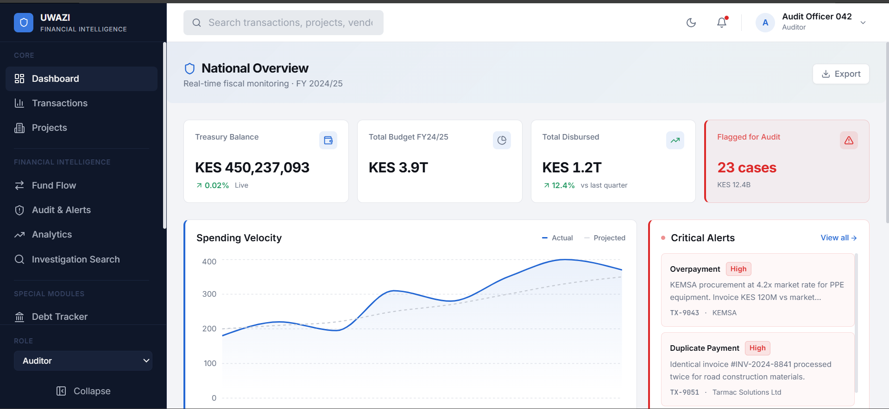
Mboroti Healthcare Clinic
A modern healthcare website designed to make clinical services, patient information, and appointment booking easily accessible online. The platform provides clear information about medical services, the clinical team, healthcare resources, and direct communication with the facility.
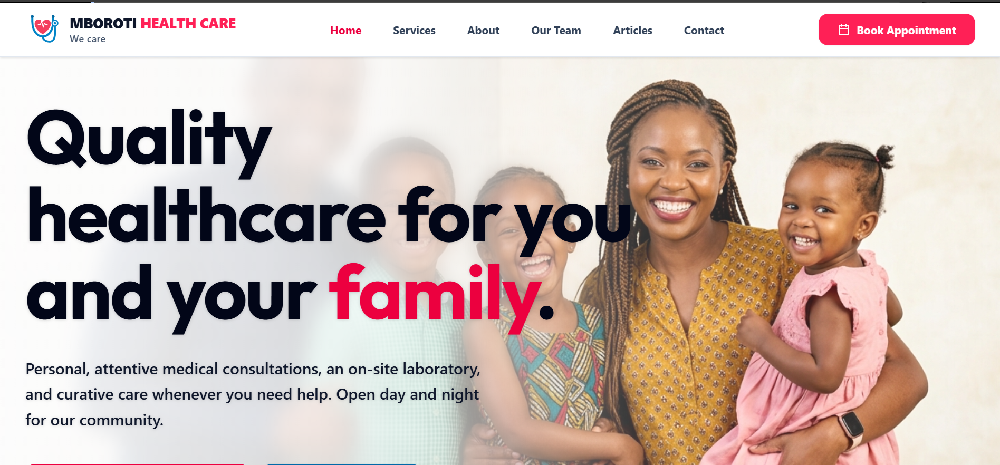
Dalo Plumbing Solutions
A modern, responsive business website built for a professional plumbing company. The platform focuses on a strong visual identity, mobile-first experience, fast performance, local SEO, service presentation, customer trust, and conversion-focused contact experiences.
Skinner's Restaurant
A responsive, modern online platform for Skinner's Restaurant designed to showcase menu offerings, dining experience, and facilitate customer engagement and reservations with an elegant web interface.
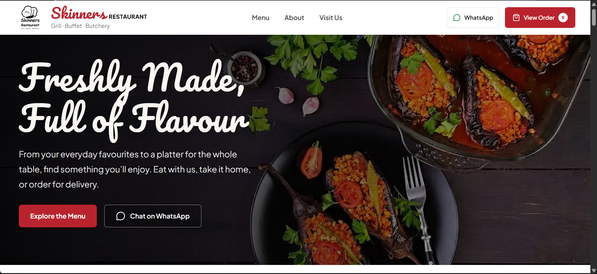
Niks Digital Connections
A modern commerce platform built for electronics retail operations. The system combines product management, inventory tracking, secure M-Pesa payments, and streamlined order fulfillment to support day-to-day business growth.
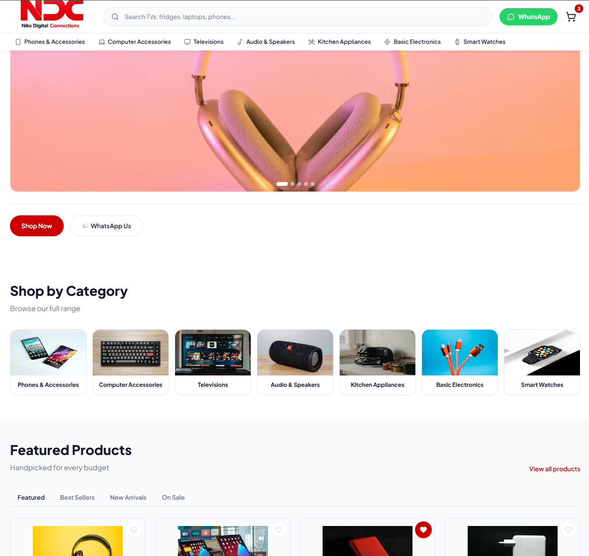
ABC Docs
A specialized business document generator for creating professional contracts, quotes, proposals, invoices, agreements, receipts, and other vital business documentation with automated templating and formatting.
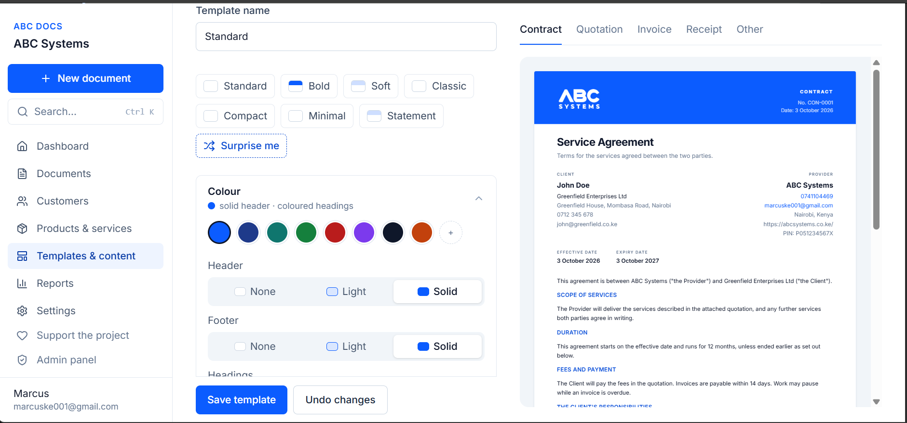
ABC Systems
A modern technology company website built to present ABC Systems' digital solutions, software products, and technology services to businesses. The platform provides a clear foundation for showcasing custom software, business systems, automation, and digital solutions while establishing a professional online presence for the company.
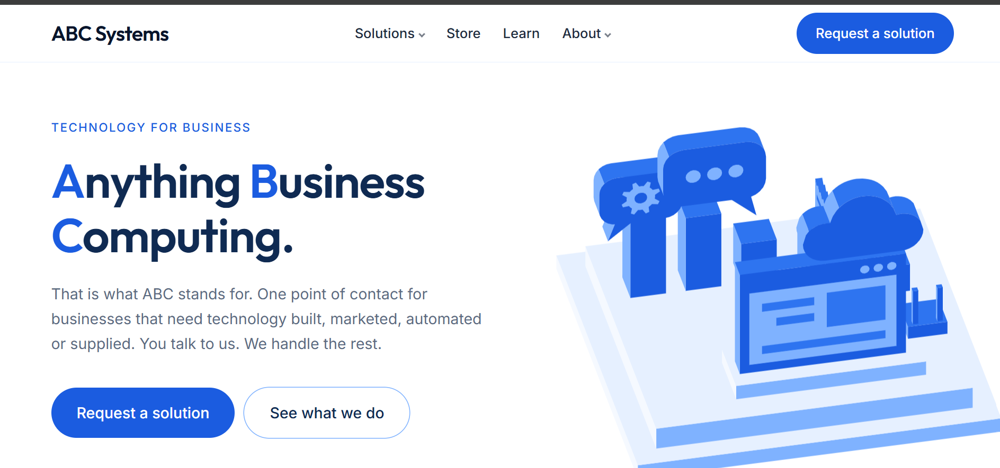
FlowBiz POS
A complete point-of-sale system that empowers businesses to seamlessly track inventory, purchases, expenses, and overall business operations. Built to handle daily cashier management, send automated WhatsApp reminders, generate detailed PDF reports, and track every business activity in real-time.
This is a live demo running on sample data feel free to click around, but please note anything you add here is temporary and not saved. The production version is deployed for a real retail business with its own private database.
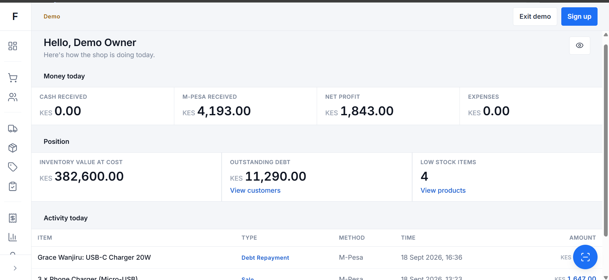
Karen West Custom Packaging & Branding
An enterprise-grade B2B packaging and branding showcase designed for corporate events, weddings, and hospitality. Features a visual 5-step laboratory purification pipeline, a dynamic label configurator, and direct WhatsApp quote dispatch, built with a clean, clinical design architecture.
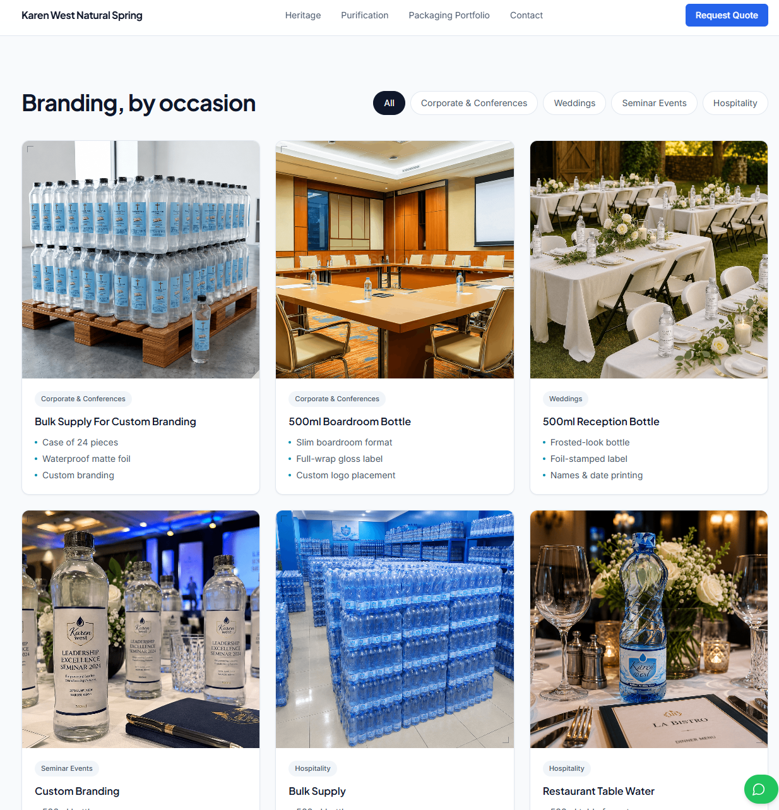
Charles Upholstery Digital Platform
A premium digital storefront and lead generation engine engineered for a luxury upholstery studio. Features high-fidelity media rendering optimized for showcasing design craftsmanship, coupled with an automated customer onboarding system that securely captures and routes high-intent project configurations directly to the operational mailbox.
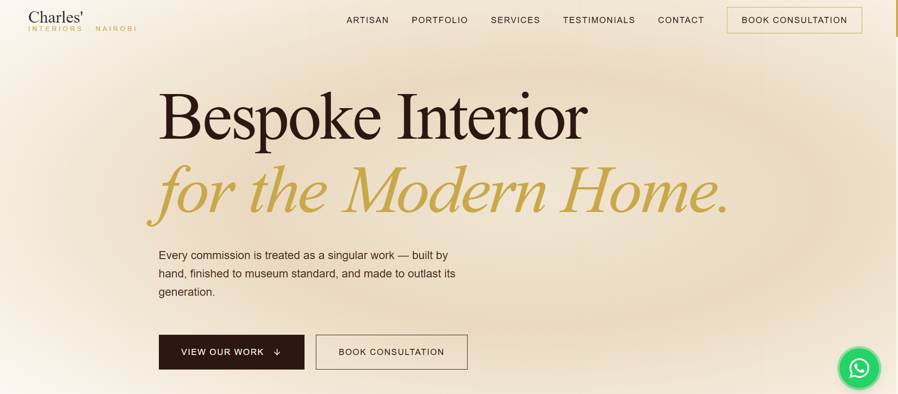
Karen West Natural Spring
A conversion-focused business website combining local SEO, customer inquiry management, transactional email workflows, and search visibility optimisation. Built to strengthen online presence while supporting operational efficiency.
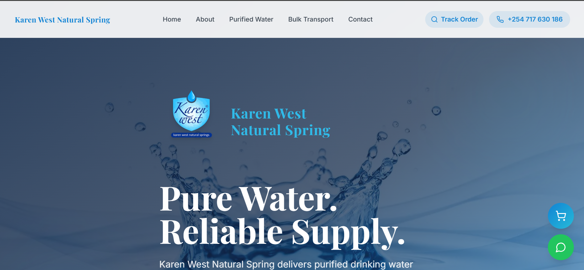
Focus List – Task, Time & AI
A mobile‑first productivity tool that combines task management, Pomodoro timing, focus sounds (brown, white, pink, rain, ocean), and an AI assistant – all wrapped in a Capacitor‑driven native Android APK. Task reminders and timer alerts are delivered via background‑ready local notifications. AI is powered by Groq’s Llama 3.1 model through a Cloudflare Worker proxy, keeping API keys secure. Templates, daily insights, notes, and full backup/restore make it a complete daily driver.
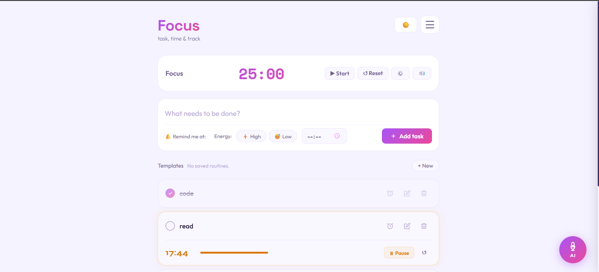
Chatbot-KE: Contextual AI Assistant
A responsive, dark-mode conversational interface engineered for technical problem-solving and general knowledge ingestion. Features dynamic Markdown parsing with collapsible syntax-highlighted blocks for complex code rendering, paired with hands-free prompt dictation via the native Web Speech API and an in-memory ephemeral state system to preserve user context windows natively throughout the active session lifecycle.
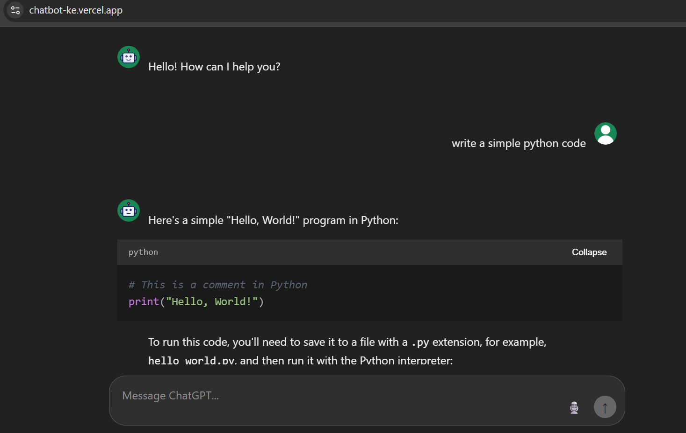